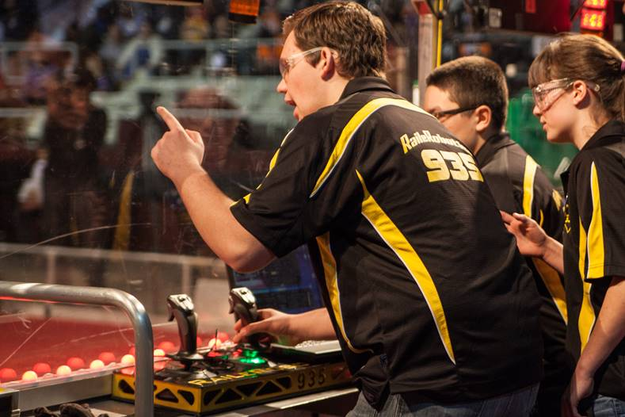

The third category of judged awards have judges specifically assigned to read prepared information packets by the students/teams with follow up interviews to determine winning individuals and teams.
Please note – Although these awards will be introduced in the following section, due to the in-depth nature of the requirements for judging, a separate module serve to fully explain the process.
